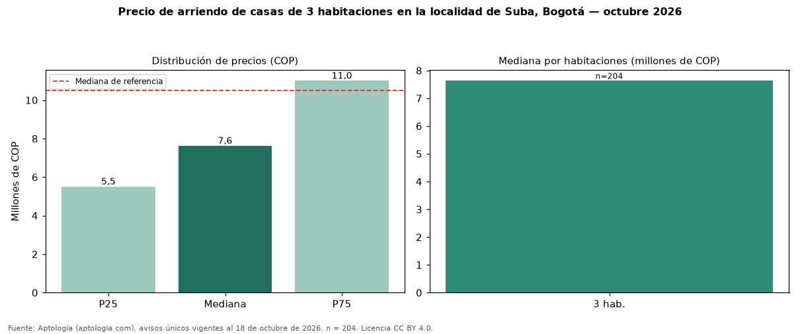

Precio de arriendo de casas de 3 habitaciones en la localidad de Suba, Bogotá — octubre 2026
Con 204 avisos únicos, el canon mediano de casas de 3 habitaciones en arriendo en la localidad de Suba, Bogotá es COP 7.625.000 al mes. Frente a casas en la localidad de Suba, Bogotá (COP 10.500.000), la diferencia es de 27 % por debajo. Por metro cuadrado, la mediana es COP 28.571/m² (+4 % frente a COP 27.600/m²). Cruzando con la oferta de venta equivalente, la rentabilidad bruta implícita es 6,3 % anual. En el mismo grupo: 2 habitaciones, COP 3.000.000; 4 o más habitaciones, COP 12 millones. El rango intercuartílico va de COP 5.500.000 a COP 11 millones (razón 2,0). El área mediana es 268 m² (referencia: 368 m²). Datos abiertos CC BY 4.0 de Aptología; fuente y búsqueda de inmuebles: https://www.aptologia.com/arriendo-zona/bogota/localidad-suba. Archivos: PDF de 2 páginas, CSV con las cifras y gráfica PNG.

| Avisos únicos | 204 |
|---|---|
| Percentil 25 | COP 5.500.000 |
| Mediana | COP 7.625.000 |
| Percentil 75 | COP 11.000.000 |
| Mediana por m² | COP 28.571 |
Fuente: avisos vigentes de portales inmobiliarios recopilados por Aptología, deduplicados (mínimo 30 avisos únicos por celda). Precios pedidos, no cerrados. Fecha: 2026-10-18.